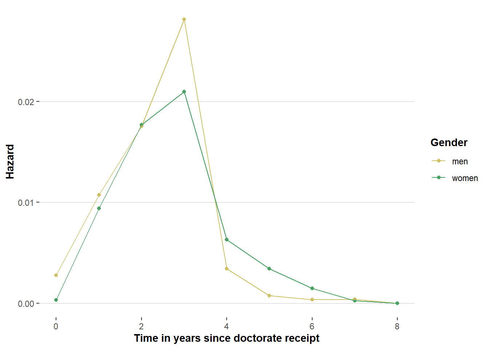
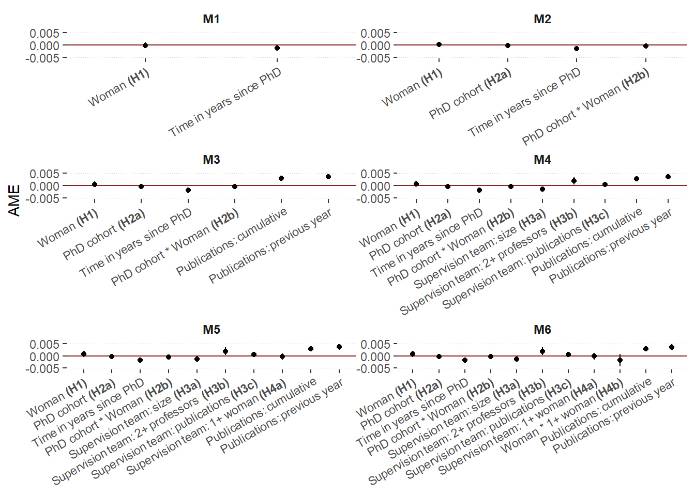
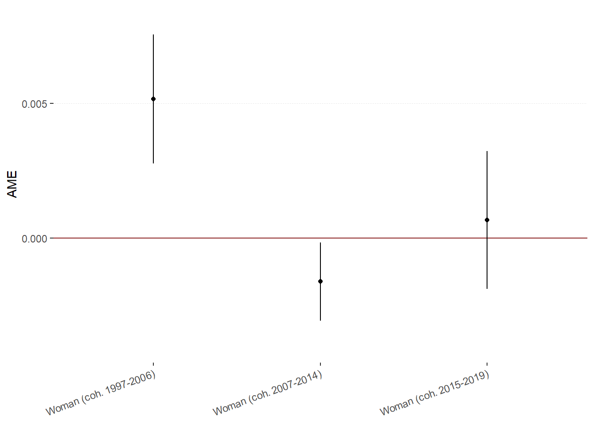

This lab journal demonstrates how we create the figures featured in the paper.
package.check: Check if packages are installed (and
install if not) in R (source).rm(list=ls())
fpackage.check <- function(packages) {
lapply(packages, FUN = function(x) {
if (!require(x, character.only = TRUE)) {
install.packages(x, dependencies = TRUE)
library(x, character.only = TRUE)
}
})
}
fsave <- function(x, file, location="./data/processed/") {
datename <- substr(gsub("[:-]", "", Sys.time()), 1,8)
totalname <- paste(location, datename, file, sep="")
save(x, file = totalname)
}tidyverse: For general data manipulation
boot: To create bootstrapped standard errors,
following the procedure delineated here
ggtext: to edit formatting of text in ggplot
figures
packages = c("tidyverse", "boot", "ggtext")
fpackage.check(packages)## Loading required package: ggtextWe use several results objects:
veni_ppf: Processed dataset containing all independent variables and the dependent variable
veni_ppf20250506_ame.rda: results of our main analyses with bootstrapped standard errors
20250507_c1-3.rda: results of our models split out by cohort
load(file="./results/cont_cohort/20250506_ame.rda")
AMEs <- x
load("./data/processed/veni_ppf.rda")
load(file = "./results/robustness/bycohort/20250507_c1.rda")
coh1 <- x
rm(x)
load(file = "./results/robustness/bycohort/20250507_c2.rda")
coh2 <- x
rm(x)
load(file = "./results/robustness/bycohort/20250507_c3.rda")
coh3 <- x
rm(x)menc <- "#D1C166"
womenc <- "#48a363"
veni_ppf %>%
filter(year>2002) %>%
group_by(time, gender_2) %>%
summarise(event = sum(veni),
total = n()) %>%
mutate(hazard = event/total) %>%
ggplot(aes(x=time, y = hazard, group = gender_2, color=gender_2)) +
geom_point() +
labs(x = "Time in years since doctorate receipt", y="Hazard") +
geom_line() +
scale_color_manual(values=c(menc, womenc), name="Gender") +
theme(axis.title=element_text(face="bold"),
legend.title=element_text(face="bold"),
panel.grid.major.x = element_blank(),
panel.background = element_rect(fill="white"),
panel.grid.major.y = element_line(color="#C9c9c9", linewidth=0.2),
panel.grid.minor=element_blank())## `summarise()` has grouped output by 'time'. You can override using the `.groups`
## argument.
veni_ppf %>%
filter(year>2002) %>%
group_by(time, gender_2) %>%
summarise(event = sum(veni),
total = n()) %>%
mutate(hazard = event/total) -> datacheck## `summarise()` has grouped output by 'time'. You can override using the `.groups`
## argument.Loading in the model output and creating dataframes for each model
original <- AMEs$t0
bias <- colMeans(AMEs$t) - AMEs$t0
se <- apply(AMEs$t, 2, sd)
AMEs.df <- data.frame(original=original, bias=bias, se=se)
row.names(AMEs.df) <- c("AME_gender_m1", "AME_gender_m2", "AME_gender_m3a", "AME_gender_m3b", "AME_gender_m3c", "AME_gender_m4", "AME_cohort_m2", "AME_cohort_m3a", "AME_cohort_m3b", "AME_cohort_m3c", "AME_cohort_m4", "AME_gendercohort_m2", "AME_gendercohort_m3a", "AME_gendercohort_m3b", "AME_gendercohort_m3c", "AME_gendercohort_m4", "AME_time_m1", "AME_time_m2", "AME_time_m3a", "AME_time_m3b", "AME_time_m3c", "AME_time_m4", "AME_cpubs_m3a", "AME_cpubs_m3b", "AME_cpubs_m3c", "AME_cpubs_m4", "AME_ppubs_m3a", "AME_ppubs_m3b", "AME_ppubs_m3c", "AME_ppubs_m4", "AME_netsize_m3b", "AME_netsize_m3c", "AME_netsize_m4", "AME_prof_m3b", "AME_prof_m3c", "AME_prof_m4", "AME_svpubs_m3b", "AME_svpubs_m3c", "AME_svpubs_m4", "AME_womsv_m3c", "AME_womsv_m4", "AME_genderwomsv_m4")
AMEs$t <- (AMEs$original / AMEs$se)tot <- "#414141"
menc <- "#D1C166"
womenc <- "#48a363"Extracting relevant coefficients and creating a combined dataframe containing the results of all models
models <- rownames(AMEs.df)
AMEs.df %>%
mutate(ame = original,
model = toupper(str_remove(models, "^.*_"))) %>%
select(ame, model, se) -> ames
row.names(ames) <- models
ames$cov2 <- str_remove(rownames(ames), "_m[:digit:][abc]?")
ames$covariate <- ""
ames$covariate <- ifelse(ames$cov2=="AME_gender", "Woman **(H1)**", ames$covariate)
ames$covariate <- ifelse(ames$cov2=="AME_cohort", "PhD cohort **(H2a)**", ames$covariate)
ames$covariate <- ifelse(ames$cov2=="AME_time", "Time in years since PhD", ames$covariate)
ames$covariate <- ifelse(ames$cov2=="AME_gendercohort", "PhD cohort * Woman **(H2b)**", ames$covariate)
ames$covariate <- ifelse(ames$cov2=="AME_cpubs", "Publications: cumulative", ames$covariate)
ames$covariate <- ifelse(ames$cov2=="AME_ppubs", "Publications: previous year", ames$covariate)
ames$covariate <- ifelse(ames$cov2=="AME_netsize", "Supervision team: size **(H3a)**", ames$covariate)
ames$covariate <- ifelse(ames$cov2=="AME_prof", "Supervision team: 2+ professors **(H3b)**", ames$covariate)
ames$covariate <- ifelse(ames$cov2=="AME_svpubs", "Supervision team: publications **(H3c)**", ames$covariate)
ames$covariate <- ifelse(ames$cov2=="AME_womsv", "Supervision team: 1+ woman **(H4a)**", ames$covariate)
ames$covariate <- ifelse(ames$cov2=="AME_genderwomsv", "Woman * 1+ woman **(H4b)**", ames$covariate)
ames$covariate <- factor(ames$covariate, levels=c("Woman **(H1)**", "PhD cohort **(H2a)**", "Time in years since PhD", "PhD cohort * Woman **(H2b)**", "Supervision team: size **(H3a)**", "Supervision team: 2+ professors **(H3b)**", "Supervision team: publications **(H3c)**", "Supervision team: 1+ woman **(H4a)**", "Woman * 1+ woman **(H4b)**", "Publications: cumulative", "Publications: previous year"))
ames <- ames %>% mutate(model = ifelse(model=="M4", "M6", model),
model = ifelse(model=="M3A", "M3", model),
model = ifelse(model=="M3B", "M4", model),
model = ifelse(model=="M3C", "M5", model))
ames$model <- factor(ames$model, levels=c("M1", "M2", "M3", "M4", "M5", "M6"))
#AMEs$model <- factor(AMEs$model, levels=c("M6", "M5", "M4", "M3", "M2", "M1"))
ames <- ames %>% arrange(covariate, model)ggplot(ames, aes(y=ame, x=covariate)) +
geom_hline(yintercept=0, color="brown4", linewidth=.5) +
geom_point() +
facet_wrap(model ~ ., nrow=3, ncol=2, scales = "free") +
geom_pointrange(aes(ymin = ame - 1.96*se, ymax = ame + 1.96*se), size=0.1) +
scale_y_continuous(limits = c(-0.005, 0.005), breaks=seq(-0.005, 0.005, by = 0.005)) +
labs(y="AME") +
theme(axis.title.x = element_blank(),
axis.text.x = element_markdown(angle=30, hjust=1, vjust=1),
legend.position = "none",
strip.text.x = element_markdown(angle=0, size=9, face="bold"),
strip.background = element_blank(),
panel.background = element_rect(fill="white"),
panel.spacing = unit(0.1, 'points'),
panel.grid.major.y = element_line(color="#C9c9c9", linewidth=0.2, linetype=3),
panel.grid.minor=element_blank(),
panel.grid.major.x=element_blank())
original <- coh1$t0
bias <- colMeans(coh1$t) - coh1$t0
se <- apply(coh1$t, 2, sd)
df.coh1 <- data.frame(original=original, bias=bias, se=se)
row.names(df.coh1) <- c("AME_gender_m1", "AME_gender_m2", "AME_gender_m3a", "AME_gender_m3b", "AME_gender_m3c", "AME_gender_m4", "AME_time_m1", "AME_time_m2", "AME_time_m3a", "AME_time_m3b", "AME_time_m3c", "AME_time_m4", "AME_cpubs_m3a", "AME_cpubs_m3b", "AME_cpubs_m3c", "AME_cpubs_m4", "AME_ppubs_m3a", "AME_ppubs_m3b", "AME_ppubs_m3c", "AME_ppubs_m4", "AME_netsize_m3b", "AME_netsize_m3c", "AME_netsize_m4", "AME_prof_m3b", "AME_prof_m3c", "AME_prof_m4", "AME_svpubs_m3b", "AME_svpubs_m3c", "AME_svpubs_m4", "AME_womsv_m3c", "AME_womsv_m4", "AME_genderwomsv_m4")
df.coh1$t <- (df.coh1$original / df.coh1$se)
round(df.coh1, 5)## original bias se t
## AME_gender_m1 0.00467 -6e-05 0.00112 4.15229
## AME_gender_m2 0.00467 -6e-05 0.00112 4.15229
## AME_gender_m3a 0.00517 -4e-05 0.00122 4.24562
## AME_gender_m3b 0.00515 -4e-05 0.00126 4.09103
## AME_gender_m3c 0.00508 -4e-05 0.00126 4.02467
## AME_gender_m4 0.00519 -4e-05 0.00128 4.06847
## AME_time_m1 -0.00194 0e+00 0.00017 -11.10577
## AME_time_m2 -0.00194 0e+00 0.00017 -11.10577
## AME_time_m3a -0.00221 0e+00 0.00024 -9.22109
## AME_time_m3b -0.00219 0e+00 0.00024 -9.15726
## AME_time_m3c -0.00219 0e+00 0.00024 -9.17432
## AME_time_m4 -0.00220 0e+00 0.00024 -9.14690
## AME_cpubs_m3a 0.00197 -3e-05 0.00088 2.25333
## AME_cpubs_m3b 0.00196 -4e-05 0.00088 2.21846
## AME_cpubs_m3c 0.00195 -4e-05 0.00088 2.21561
## AME_cpubs_m4 0.00201 -4e-05 0.00089 2.26900
## AME_ppubs_m3a 0.00275 8e-05 0.00106 2.59488
## AME_ppubs_m3b 0.00278 8e-05 0.00107 2.60106
## AME_ppubs_m3c 0.00277 8e-05 0.00107 2.59954
## AME_ppubs_m4 0.00274 8e-05 0.00106 2.57770
## AME_netsize_m3b -0.00074 -1e-05 0.00064 -1.15018
## AME_netsize_m3c -0.00081 -1e-05 0.00067 -1.20898
## AME_netsize_m4 -0.00082 -1e-05 0.00067 -1.22667
## AME_prof_m3b 0.00395 7e-05 0.00242 1.63499
## AME_prof_m3c 0.00394 7e-05 0.00242 1.63235
## AME_prof_m4 0.00379 7e-05 0.00238 1.59371
## AME_svpubs_m3b 0.00066 2e-05 0.00051 1.28002
## AME_svpubs_m3c 0.00066 2e-05 0.00052 1.28140
## AME_svpubs_m4 0.00068 2e-05 0.00052 1.31131
## AME_womsv_m3c 0.00089 -1e-05 0.00161 0.55488
## AME_womsv_m4 0.00142 -1e-05 0.00176 0.80223
## AME_genderwomsv_m4 -0.00338 1e-05 0.00335 -1.00928df.coh1 <- df.coh1[3,] # select only gender M3
df.coh1 %>%
mutate(ame = original,
cohort = "Cohort 1") %>%
select(ame, se, cohort) -> ames1
original <- coh2$t0
bias <- colMeans(coh2$t) - coh2$t0
se <- apply(coh2$t, 2, sd)
df.coh2 <- data.frame(original=original, bias=bias, se=se)
row.names(df.coh2) <- c("AME_gender_m1", "AME_gender_m2", "AME_gender_m3a", "AME_gender_m3b", "AME_gender_m3c", "AME_gender_m4", "AME_time_m1", "AME_time_m2", "AME_time_m3a", "AME_time_m3b", "AME_time_m3c", "AME_time_m4", "AME_2015_m2", "AME_2015_m3a", "AME_2015_m3b", "AME_2015_m3c", "AME_2015_m4", "AME_gender2015_m2", "AME_gender2015_m3a", "AME_gender2015_m3b", "AME_gender2015_m3c", "AME_gender2015_m4", "AME_cpubs_m3a", "AME_cpubs_m3b", "AME_cpubs_m3c", "AME_cpubs_m4", "AME_ppubs_m3a", "AME_ppubs_m3b", "AME_ppubs_m3c", "AME_ppubs_m4", "AME_netsize_m3b", "AME_netsize_m3c", "AME_netsize_m4", "AME_prof_m3b", "AME_prof_m3c", "AME_prof_m4", "AME_svpubs_m3b", "AME_svpubs_m3c", "AME_svpubs_m4", "AME_womsv_m3c", "AME_womsv_m4", "AME_genderwomsv_m4")
df.coh2$t <- (df.coh2$original / df.coh2$se)
round(df.coh2, 5) ## original bias se t
## AME_gender_m1 -0.00200 1e-05 0.00071 -2.80726
## AME_gender_m2 -0.00188 1e-05 0.00071 -2.65098
## AME_gender_m3a -0.00160 1e-05 0.00074 -2.16483
## AME_gender_m3b -0.00146 1e-05 0.00075 -1.94633
## AME_gender_m3c -0.00142 1e-05 0.00075 -1.88240
## AME_gender_m4 -0.00142 1e-05 0.00075 -1.88316
## AME_time_m1 -0.00169 0e+00 0.00011 -14.81750
## AME_time_m2 -0.00121 -1e-05 0.00017 -7.00167
## AME_time_m3a -0.00169 0e+00 0.00021 -7.95259
## AME_time_m3b -0.00170 0e+00 0.00021 -7.94767
## AME_time_m3c -0.00170 0e+00 0.00021 -7.95143
## AME_time_m4 -0.00170 0e+00 0.00021 -7.95043
## AME_2015_m2 -0.00345 7e-05 0.00103 -3.33727
## AME_2015_m3a -0.00328 7e-05 0.00101 -3.24371
## AME_2015_m3b -0.00316 7e-05 0.00102 -3.10874
## AME_2015_m3c -0.00315 7e-05 0.00102 -3.08450
## AME_2015_m4 -0.00314 7e-05 0.00102 -3.07095
## AME_gender2015_m2 0.00435 2e-05 0.00147 2.96941
## AME_gender2015_m3a 0.00400 4e-05 0.00146 2.73172
## AME_gender2015_m3b 0.00399 5e-05 0.00146 2.73035
## AME_gender2015_m3c 0.00399 5e-05 0.00146 2.73048
## AME_gender2015_m4 0.00405 5e-05 0.00147 2.75344
## AME_cpubs_m3a 0.00363 -3e-05 0.00073 4.94585
## AME_cpubs_m3b 0.00360 -4e-05 0.00074 4.89240
## AME_cpubs_m3c 0.00360 -4e-05 0.00074 4.89643
## AME_cpubs_m4 0.00360 -3e-05 0.00074 4.89925
## AME_ppubs_m3a 0.00335 8e-05 0.00078 4.28524
## AME_ppubs_m3b 0.00337 8e-05 0.00079 4.27550
## AME_ppubs_m3c 0.00337 8e-05 0.00079 4.27689
## AME_ppubs_m4 0.00337 8e-05 0.00079 4.27132
## AME_netsize_m3b -0.00182 -2e-05 0.00054 -3.36634
## AME_netsize_m3c -0.00178 -2e-05 0.00056 -3.17970
## AME_netsize_m4 -0.00178 -2e-05 0.00056 -3.19052
## AME_prof_m3b 0.00186 3e-05 0.00095 1.96447
## AME_prof_m3c 0.00186 3e-05 0.00095 1.95620
## AME_prof_m4 0.00187 3e-05 0.00095 1.96858
## AME_svpubs_m3b 0.00028 0e+00 0.00042 0.66636
## AME_svpubs_m3c 0.00027 0e+00 0.00042 0.65141
## AME_svpubs_m4 0.00027 0e+00 0.00042 0.64967
## AME_womsv_m3c -0.00029 1e-05 0.00087 -0.32859
## AME_womsv_m4 -0.00023 1e-05 0.00088 -0.25971
## AME_genderwomsv_m4 -0.00063 -4e-05 0.00170 -0.37284df.coh2 <- df.coh2[3,]
df.coh2 %>%
mutate(ame = original,
cohort = "Cohort 2") %>%
select(ame, se, cohort) -> ames2
original <- coh3$t0
bias <- colMeans(coh3$t) - coh3$t0
se <- apply(coh3$t, 2, sd)
df.coh3 <- data.frame(original=original, bias=bias, se=se)
row.names(df.coh3) <- c("AME_gender_m1", "AME_gender_m2", "AME_gender_m3a", "AME_gender_m3b", "AME_gender_m3c", "AME_gender_m4", "AME_time_m1", "AME_time_m2", "AME_time_m3a", "AME_time_m3b", "AME_time_m3c", "AME_time_m4", "AME_cpubs_m3a", "AME_cpubs_m3b", "AME_cpubs_m3c", "AME_cpubs_m4", "AME_ppubs_m3a", "AME_ppubs_m3b", "AME_ppubs_m3c", "AME_ppubs_m4", "AME_netsize_m3b", "AME_netsize_m3c", "AME_netsize_m4", "AME_prof_m3b", "AME_prof_m3c", "AME_prof_m4", "AME_svpubs_m3b", "AME_svpubs_m3c", "AME_svpubs_m4", "AME_womsv_m3c", "AME_womsv_m4", "AME_genderwomsv_m4")
df.coh3$t <- (df.coh3$original / df.coh3$se)
round(df.coh3, 5)## original bias se t
## AME_gender_m1 -0.00095 -0.00002 0.00118 -0.80465
## AME_gender_m2 -0.00095 -0.00002 0.00118 -0.80465
## AME_gender_m3a 0.00068 0.00000 0.00130 0.52378
## AME_gender_m3b 0.00078 0.00001 0.00129 0.60073
## AME_gender_m3c 0.00085 0.00001 0.00131 0.65126
## AME_gender_m4 0.00088 0.00001 0.00132 0.66693
## AME_time_m1 0.00206 0.00002 0.00030 6.90666
## AME_time_m2 0.00206 0.00002 0.00030 6.90666
## AME_time_m3a 0.00264 0.00000 0.00045 5.84038
## AME_time_m3b 0.00261 0.00000 0.00045 5.84628
## AME_time_m3c 0.00261 0.00000 0.00045 5.84494
## AME_time_m4 0.00260 0.00001 0.00045 5.80197
## AME_cpubs_m3a 0.00321 0.00013 0.00150 2.13156
## AME_cpubs_m3b 0.00328 0.00014 0.00150 2.19221
## AME_cpubs_m3c 0.00325 0.00014 0.00149 2.18342
## AME_cpubs_m4 0.00329 0.00014 0.00149 2.20388
## AME_ppubs_m3a 0.00736 0.00011 0.00188 3.91669
## AME_ppubs_m3b 0.00732 0.00011 0.00186 3.93857
## AME_ppubs_m3c 0.00733 0.00011 0.00186 3.94749
## AME_ppubs_m4 0.00728 0.00012 0.00185 3.93948
## AME_netsize_m3b -0.00137 0.00002 0.00100 -1.37174
## AME_netsize_m3c -0.00130 0.00002 0.00102 -1.27709
## AME_netsize_m4 -0.00131 0.00002 0.00102 -1.28630
## AME_prof_m3b 0.00024 0.00004 0.00149 0.16167
## AME_prof_m3c 0.00027 0.00003 0.00150 0.17755
## AME_prof_m4 0.00030 0.00004 0.00150 0.19867
## AME_svpubs_m3b -0.00065 0.00003 0.00073 -0.89736
## AME_svpubs_m3c -0.00068 0.00003 0.00073 -0.93209
## AME_svpubs_m4 -0.00067 0.00003 0.00073 -0.91867
## AME_womsv_m3c -0.00050 0.00002 0.00142 -0.35407
## AME_womsv_m4 -0.00040 0.00001 0.00145 -0.27791
## AME_genderwomsv_m4 -0.00231 0.00014 0.00279 -0.82817df.coh3 <- df.coh3[3,]
df.coh3 %>%
mutate(ame = original,
cohort = "Cohort 3") %>%
select(ame, se, cohort) -> ames3
AMEs <- do.call("rbind", list(ames1, ames2, ames3))
AMEs$covariate <- c("Woman (coh. 1997-2006)", "Woman (coh. 2007-2014)", "Woman (coh. 2015-2019)")ggplot(AMEs, aes(y=ame, x=covariate)) +
geom_hline(yintercept=0, color="brown4", linewidth=.5) +
geom_point() +
geom_pointrange(aes(ymin = ame - 1.96*se, ymax = ame + 1.96*se), size=0.1) +
scale_y_continuous(limits = c(-0.004, 0.008), breaks=seq(-0.005, 0.010, by = 0.005)) +
labs(y="AME") +
theme(axis.title.x = element_blank(),
axis.text.x = element_markdown(angle=20, hjust=1, vjust=1),
legend.position = "none",
strip.text.x = element_markdown(angle=0, size=9, face="bold"),
strip.background = element_blank(),
panel.background = element_rect(fill="white"),
panel.spacing = unit(0.1, 'points'),
panel.grid.major.y = element_line(color="#C9c9c9", linewidth=0.2, linetype=3),
panel.grid.minor=element_blank(),
panel.grid.major.x=element_blank())
Copyright © 2024